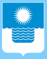

Геленджик – солнечный курортный город на Черноморском побережье Краснодарского края России, расположенный вокруг обширной бухты, защищенной горами.
Он является административным центром региона, протянувшегося более чем на 100 км вдоль Черного моря и официально называющегося муниципальным образованием
«город-курорт Геленджик». В эту структуру включены два десятка приморских поселков и деревень, она известна также как Большой Геленджик. С 2008 года Геленджик
пребывает в десятке самых благоустроенных и комфортных городов страны. Местные достопримечательности разбросаны по всему курортному региону. Это, в основном,
красивые природные объекты, археологические локации, парки и центры развлечений для туристов.